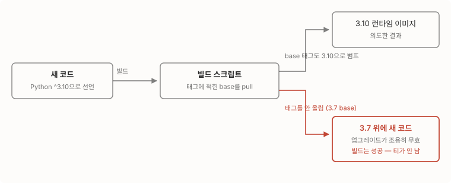

사내 서비스 여럿이 파이썬 3.7로 돌고 있었어요. 3.7은 2023년 6월에 지원이 끝난 버전이라, 보안 패치를 받으려면 올려야 하는 상황이었죠. 그래서 3.10으로 올렸어요. 막상 해보니 “파이썬 버전을 올리는 일”에서 파이썬 문법이 차지하는 비중이 가장 작았어요. 시간이 간 곳은 같이 올라가야 하는 의존성들, 그리고 빌드 체계였어요.
이 글은 그 기록이에요.
런타임만 올릴 수는 없었다
파이썬 버전을 올리면 그 위에 앉아 있던 패키지들이 줄줄이 따라 움직여요. 3.7 시절에 고정해 둔 버전들이 3.10을 지원하지 않거나, 지원해도 그 사이에 보안 결함이 쌓여 있었어요. 어차피 다 움직여야 한다면 보안 패치까지 한 번에 가기로 했죠.
- 웹 프레임워크와 서버: fastapi 0.63 → 0.115, uvicorn 0.13 → 0.23. uvicorn을 올리면서 딸려 오는 h11도 알려진 결함이 패치된 버전으로 올라갔어요.
- 정확 버전으로 못 박아 둔 boto3를 풀어, 그 아래 urllib3가 결함 패치 버전으로 올라올 수 있게 했고요.
- python-multipart는 알려진 결함 두 건이 패치된 버전으로 올렸어요. 결함 식별 번호들은 근거 섹션에 정리해 뒀어요.
- 아직 Flask 1.x로 도는 서비스는 1.x와 호환되는 범위로 주변 패키지를 다시 고정했어요. 런타임은 올리되 프레임워크 세대 교체는 이번 범위에 넣지 않았고요.
이 과정에서 “미선언 의존성”도 드러났어요. 직접 쓰고 있는데 의존성 목록에는 없는 패키지들이요. httpx와 python-multipart가 그동안 다른 패키지에 딸려 들어와 있었더라고요. pkg_resources를 쓰는 라이브러리 때문에 setuptools에 상한을 명시해야 했고요. 지금까지는 우연히 굴러갔다는 뜻이라, 이번에 전부 목록에 올려 우연을 명시로 바꿨어요.
제일 조심한 건 “올렸는데 안 올라간” 상태였다
가장 위험했던 함정은 컨테이너 빌드 쪽에 있었어요. 서비스 이미지는 공용 base 이미지 위에 코드를 얹어 만드는데, 빌드 스크립트가 코드에 적힌 태그의 base를 받아와요. 코드의 파이썬 선언을 3.10으로 바꿔도 base 태그를 함께 올리지 않으면, 3.7 base 위에 새 코드가 얹힌 이미지가 나와요.

고약하게도 빌드는 성공해요. 에러가 나면 바로 알 텐데, 멀쩡한 이미지가 나오고 배포도 되니 업그레이드가 조용히 무효가 되죠. 그래서 base 이미지 재빌드와 태그 범프를 머지 전 선행 조건으로 못 박고 배포 뒤에는 실제 컨테이너의 런타임 버전을 확인하는 것까지 절차로 뒀어요. 검증은 개발 환경에서 했어요. 업그레이드 브랜치 전용 태그를 만들어 배포하고, 실제로 뜬 컨테이너와 배포 선언이 일치하는지 대조한 다음에야 main 머지로 넘어갔고요. “빌드가 성공했다”와 “3.10으로 돌고 있다” 사이의 거리를 절차로 메운 셈이에요.
배포 단계 함정도 하나 더 있었어요. 여러 서비스를 한 브랜치 이름으로 묶어 배포하면서 코드가 바뀌지 않은 서비스까지 목록에 넣었더니, 그 서비스의 새 이미지는 애초에 빌드된 적이 없어서 존재하지 않는 태그를 가리키게 됐어요. 태그만 원복하고 일괄 배포 목록에는 실제로 빌드가 도는 저장소만 넣는 걸로 정리했죠.
업그레이드는 한 번에 끝나지도 않았어요. 먼저 세 서비스가 올라갔는데, 일주일 뒤 다른 작업에서 엑셀 암호화 라이브러리를 도입하자 그 라이브러리가 3.10을 요구하면서 남아 있던 서비스 둘이 뒤늦게 합류했죠. 미뤄둔 런타임 업그레이드는 이렇게 다른 작업의 선행 조건이 되어 돌아와요. 미리 올려둔 쪽은 base 이미지에 그 라이브러리를 더해 재빌드하는 것으로 끝났고요.
코드 수정은 문법보다 관성이 문제였다
정작 3.10 문법 때문에 고친 코드는 거의 없었어요. 고치게 된 건 업그레이드가 건드린 관성들이었죠.
-
포매터가 첫 사례예요. 코드 스타일을 자동으로 맞춰주는 도구인데, 20.x에서 23.x로 올리면서 전체 재포맷을 같은 커밋에 넣지 않았더니, 며칠 뒤 무관한 파일 96개가 포맷 검사에서 실패하는 부채로 돌아왔어요. 포매터의 규칙이 바뀌었는데 코드는 옛 규칙대로 남아 있으니, 이후 어떤 파일을 건드리든 검사가 그 파일을 물고 늘어지는 거죠. 포매터 버전 범프는 재포맷과 한 커밋이어야 해요.
-
버전 범프 도구도 비슷했어요. 도구 설정에 적힌 현재 버전과 코드의 버전이 어긋난 채 릴리스될 뻔했는데, 코드만 올리고 설정을 안 맞추면 다음 범프가 엉뚱한 번호에서 출발하거든요. 릴리스 커밋에서 둘을 동기화했어요.
-
가장 컸던 문제는 첫 배포가 부팅에서 죽은 사건이에요. 증상은 새 버전 컨테이너가 뜨자마자 죽는 것이었고, 원인은 업그레이드 브랜치에 개발 브랜치를 머지하면서 딸려 온 코드 한 조각이었어요. 전역에서 쓰는 저장소 클라이언트를 만드는 정본 함수가 이미 있는데, 어떤 코드가 같은 이름의 로컬 정의를 새로 만들면서 필요한 모듈을 임포트하지 않았더라고요. 이 참조가 함수 안이 아니라 모듈을 읽는 시점에 실행되는 자리라, 요청이 오기도 전에 프로세스가 이름을 못 찾고 죽은 거죠. 로컬 정의를 지우고 정본을 쓰는 걸로 정리했어요. 업그레이드 자체와는 무관한 코드였지만, 업그레이드 배포가 첫 배포였던 탓에 이 브랜치의 사건이 됐어요.
-
빌드 파일에서도 하나 나왔어요. 비동기 서버용(asgi) 설정 파일을 동기 방식(wsgi)으로 도는 서비스에 복사하던 결함이에요. 런타임을 올리려고 Dockerfile을 열어본 김에 잡힌 종류의 문제고요.
요지는 하나예요. 런타임 업그레이드는 파이썬 파일보다 그 주변(의존성 목록, 빌드 스크립트, 포매터, 버전 도구)을 더 많이 고치게 되는 작업이었어요.
무엇이 달라졌나
| 이전 | 이후 | |
|---|---|---|
| 런타임 | 2023년 6월에 지원이 끝난 3.7로 돌고 있었다 | 3.10으로 올라갔다 |
| 알려진 결함 | h11·urllib3·python-multipart에 알려진 결함이 남아 있었다 | 패치된 버전으로 함께 올라갔다 |
| 의존성 목록 | 직접 쓰는 패키지 일부가 목록에 없었다 | 전부 목록에 올리고 setuptools에는 상한을 명시했다 |
| base 이미지 | 서비스마다 3.7 base 위에서 빌드되고 있었다 | 3.10 base를 재빌드하고, 태그 범프를 머지 선행 조건으로 못 박았다 |
| 검증 | 배포 후 런타임을 확인하는 절차가 없었다 | 개발 환경에 태그로 배포한 뒤 실제 런타임 버전을 대조한다 |
다음 업그레이드에 남길 절차는 셋이다
이번에 남긴 절차는 셋이에요. base 태그 범프를 머지 전 선행 조건으로 둘 것, 배포 후 컨테이너에서 런타임 버전을 실측할 것, 포매터·버전 도구처럼 코드 밖 도구의 버전은 그 효과(재포맷·설정 동기화)와 같은 커밋으로 움직일 것. 다음에 3.10을 또 올릴 날이 오면 이 세 줄부터 볼 것 같아요.